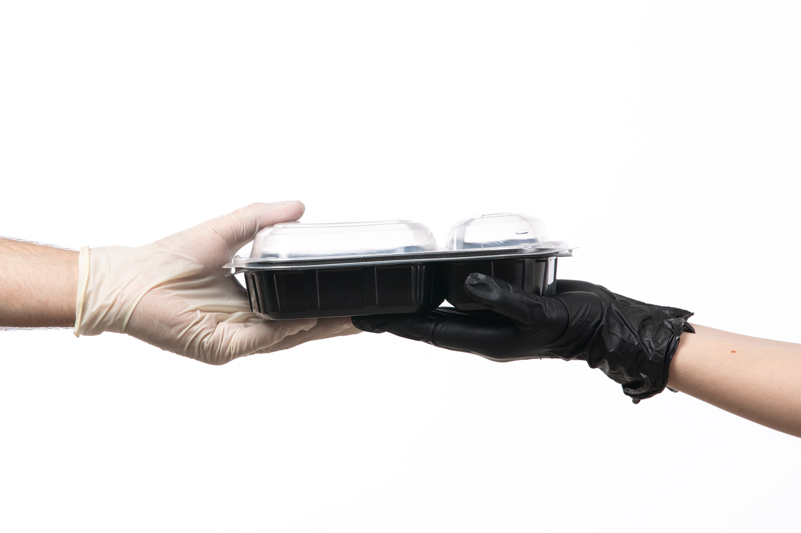

How It Works
Transparency and quality are at the core of what we do.
Below is a comprehensive breakdown of exactly what is included, ensuring you have a clear understanding of the value and structure provided.
The Alert
- The Action: Hostels, restaurants, or cafeterias use the EquiPlate website to flag surplus food at the end of their service hours. They input the type of food (e.g., rice, curry, bread), estimated quantity (in servings or kg), and the pickup time window.
- The Assurance: A brief digital "Quality Checklist" is filled out by the donor to confirm the food was prepared hygienically and is less than 24 hours old.
The Transport
- The Action: Upon receiving the alert, the EquiPlate system matches the donation with the nearest available "Rescue Rider" (volunteer or partner driver) and the nearest registered beneficiary (NGO/Shelter) based on their specific needs for that day.
- The Assurance: The rider collects the food in specialized thermal-insulated containers to maintain temperature and hygiene during transit.

The Plate
- The Action: The food is delivered directly to the partner establishment (orphanages, old-age homes, animal shelters). The receiving NGO confirms delivery via the website.
- The Assurance: The food is served immediately (same-day consumption) to ensure safety and zero waste. Donors receive a "Feedback Photo" or notification confirming their food fed real people.
These steps aren't just a process; they are a pathway to change.
But a plan is only as powerful as the people behind it.
Join us in turning this roadmap into reality—one meal, one life at a time.